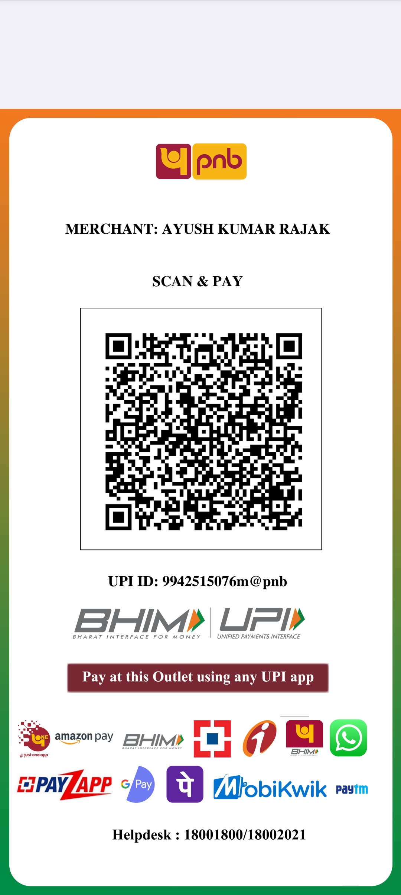

Maha Shashthi
Prescribed rituals 8:30 AM se pehle. Evening mein Bodhan, Aamantran aur Adhivas rituals.
॥ जय माता दी ॥
Jugsalai Fatak, P.S. & P.O. Jugsalai, Jamshedpur – 831006
Bhakti • Seva • Sanskriti — Maa ke aashirwad se, milkar manayein bhakti aur ekta ka parv.
Hamari Parampara
Sri Sri Maa Durga Puja Committee, Jugsalai Fatak mein aapka hardik swagat hai. Hamara uddeshya bhakti, seva, sanskriti aur samudaay ki ekta ke saath Durga Puja ka utsav manana hai. Aap sabhi bhakton ka swagat hai.
Dates & Timings
Timings shared programme poster ke hisaab se diye gaye hain. Local arrangement ke liye final timings committee se verify kar lein.
Prescribed rituals 8:30 AM se pehle. Evening mein Bodhan, Aamantran aur Adhivas rituals.
4:30 AM — Saptami rituals
6:30 AM — Ghat Sthapana aur Navapatrika snan
7:40 AM — Navapatrika entry
11:00 AM — Havan aur Chandi prayers
8:30 PM — Evening Aarti
5:53 AM se pehle — prescribed puja rituals complete
10:59 PM–11:47 PM — Nishitha Kaal Puja
4:30–5:30 AM — Anjali aur Ardhya offerings
11:00 AM — Havan aur Chandi prayers
1:00 PM — Bhog
8:00 PM — Evening Aarti
10:30 AM — Havan aur Chandi Puja
8:00 PM — Bhog offering aur evening Aarti
Dashami rituals, Aparajita Puja aur visarjan ki taiyari. Immersion ka exact time committee se confirm karein.
Note: Publish karne se pehle committee se dates aur timings verify kar lein.
Seva aur Samarpan
Puja ke aayojan mein yogdaan dene wale committee members.
Mimki Sonkar · Rishav Sharma · Karan Singh · Rishabh Tiwari · Golu Rajak · Ajay Rajak · Niku Singh · Lalla Rajak · Pappu Rajak
Sujan, Abhishek, Sumit, Lalu, Suraj, Sangam, Pawan, Tinku, Toni, Ritik, Raj, Manish, Naval, Tetu Pikey, Chhotka, Ankit, Pintu, Ranu, Rana, Sonu, Rishabh, Rahul, Rohit, Karan, Alok, Vikas, Sunny, Shubham, Anish, Yash, Rishi, Akhilesh, Sumit aur Vikram.
Committee list poster se type ki gayi hai. Names ki spelling publish karne se pehle confirm kar lein.

Seva Hi Sadhana
Aap apni shraddha aur samarthya ke anusaar sahyog kar sakte hain. Aapka yogdaan puja ke aayojan mein madad karega.

Apne UPI app se QR scan karein
Sampark Karein
Jugsalai Fatak, P.S. & P.O. Jugsalai, Jamshedpur – 831006, Jharkhand
Jugsalai Fatak, Jamshedpur
Google Maps par dekhein ↗